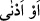

senden önce ne bir mukarreb meleğin, ne de bir peygamberin vâsıl olamadığı “
”
(iki yay arasından daha da yakın) makama ulaştın.
Kureyş’in kâfirlerine “de ki: “Ben buna” Kur’ân’a “karşılık sizden bir ücret
istemiyorum.” Tıpkı, benden önceki peygamberlerin istemediği gibi. İşte bu da,
Rasûlullah’ın kendinden önceki peygamberlere uymakla emrolunduğu hususlardan
birisidir.
“O” Kur’an, “bütün âlemler için sadece bir öğüttür.” Cenâb-ı Hak tarafından onlara
bir nasihat ve uyarıdır. O, sadece bir topluma mahsus değildir.
İrşad ehlinden olan Allah dostları da bu yolu izlemişlerdir. Zîrâ irşad ve talim için
ücret alınmaz. Çünkü ücret alma, dünyalıktır. Oysa ahiret ve Allah ehli olan kişilerin
dünyalığa tamah etmeleri doğru olmaz. Din hizmeti, başka hiç bir menfaat gözetmeksizin
sırf Allah rızası için olmalıdır.